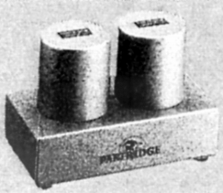

TK2220

■価格 78,000円■型式 MC型カートリッジ用昇圧トランス■入力インピーダンス 3Ω/40Ω切替■出力インピーダンス ■昇圧比 35dB■周波数帯域 20-50,000Hz±1dB■負荷抵抗 47kΩ■全高調波歪率 ■重量 ■寸法 ■発売 1983年■販売終了 1993〜94年頃■備考 備考 価格は1983年頃のもの
バイパス不可。パートリッジ製トランス使用
AUDIONIXのインデックスへ